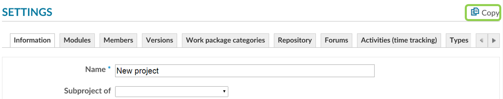

Copy an Existing Project
You can copy an existing project as a template.
Select Project Settings at the bottom of the project menu and click the Copy icon.

The copied project will automatically inherit the project description and the activated modules of the original project, which were actively used.
Enter the project name, identifier and select which of the modules you want to copy. You can adjust the modules later. Click the Copy button to save your new project.